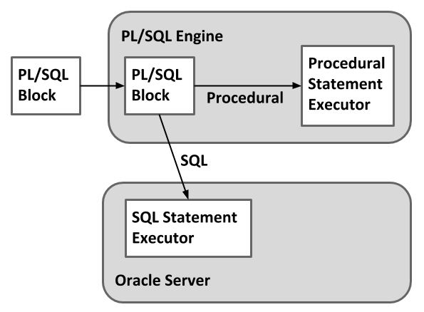
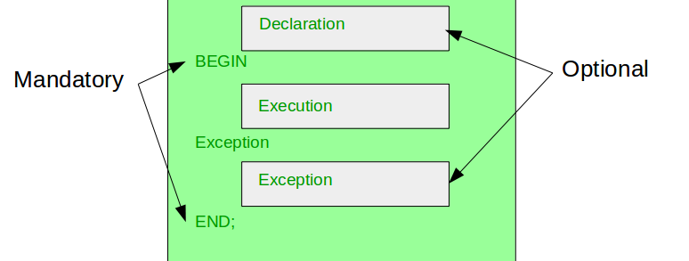
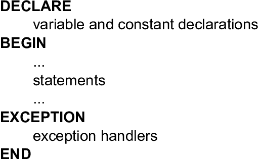
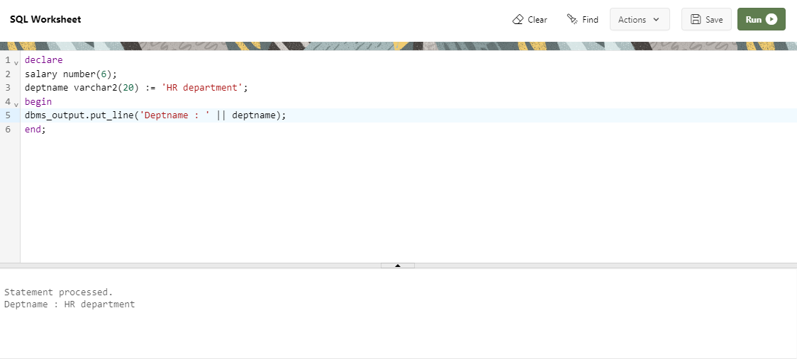
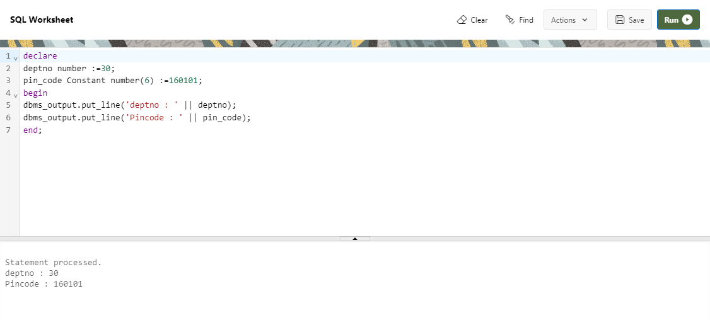
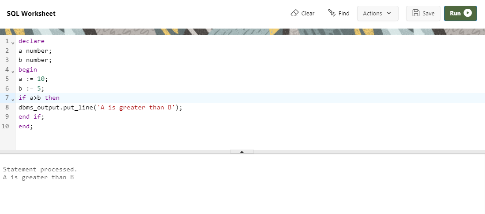
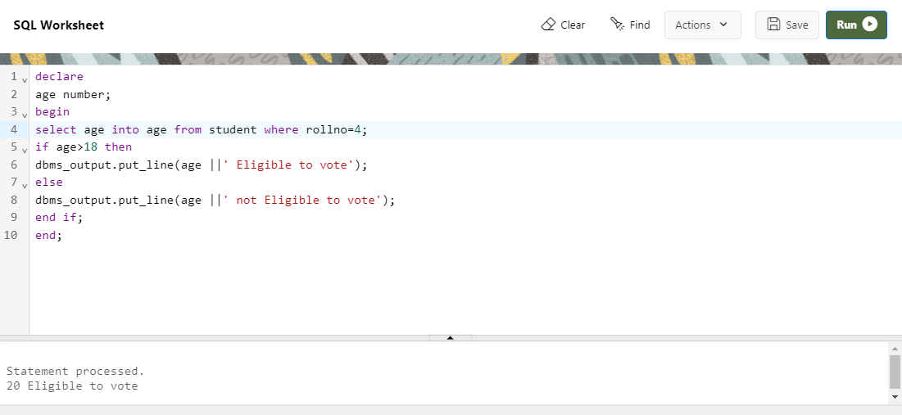
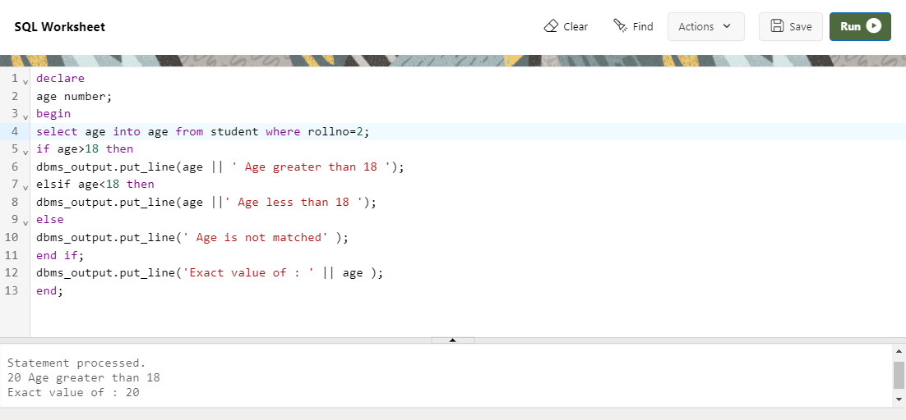
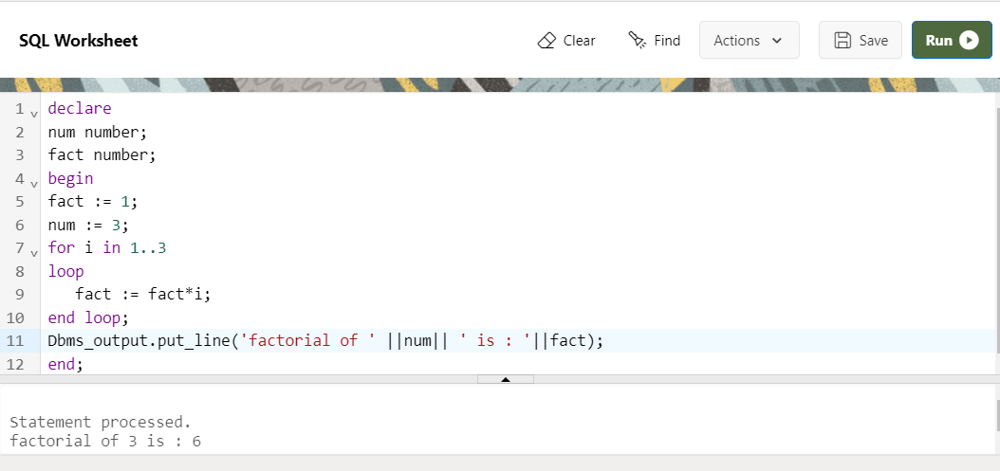
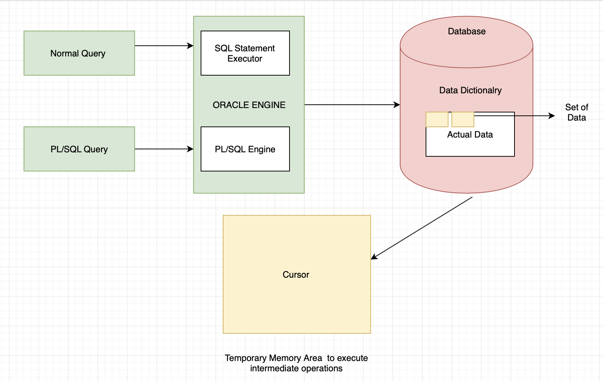

Introduction to PL/SQL
PL/SQL stands for procedural language; structured query language is known to be a block structured language. This was developed by Oracle corporation in the year 1980s. It is the Oracle corporation’s extension for SQL and also the relational database. This is also available in Oracle Database since version 7 which stores procedures, functions, packages, triggers. Times Ten in-memory database since the version 11.2.1 and also IBM DB 2 since the version 9.7. it is said that the Oracle corporation usually uses PL/SQL functionality with the different successive releases of each oracle database.
The PL/SQL language also includes procedural language elements like conditions and loops. PL/SQL allows declarations of constants and also variables of those types and also triggers. It can handle exceptions that are run time errors.

PL/SQL Block structure
PL/SQL is a block-structured language. This means that programs can be divided into logical blocks.
A PL/SQL block consists of up to three sections :
(i) Declarative
(ii) Executable
(iii) Exception Handling


(i) Declarative : This is the first section of the PL/SQL blocks. This section is an optional part. This is the section in which the declaration of variables, cursors, exceptions, subprograms, pragma instructions and collections that are needed in the block will be declared. Below are few more characteristics of this part.
This particular section is optional and can be skipped if no declarations are needed.
This should be the first section in a PL/SQL block, if present.
This section starts with the keyword ‘DECLARE’ for triggers and anonymous block. For other subprograms, this keyword will not be present. Instead, the part after the subprogram name definition marks the declaration section
This section should always be followed by execution section.
(ii) Executable : Execution part is the main and mandatory part which actually executes the code that is written inside it. Since the PL/SQL expects the executable statements from this block this cannot be an empty block, i.e., it should have at least one valid executable code line in it. Below are few more characteristics of this part.
This can contain both PL/SQL code and SQL code.
This can contain one or many blocks inside it as a nested block.
This section starts with the keyword ‘BEGIN’.
This section should be followed either by ‘END’ or Exception-Handling section (if present)
(iii) Exception Handling : The exception is unavoidable in the program which occurs at run-time and to handle this Oracle has provided an Exception-handling section in blocks. This section can also contain PL/SQL statements. This is an optional section of the PL/SQL blocks.
This is the section where the exception raised in the execution block is handled.
This section is the last part of the PL/SQL block.
Control from this section can never return to the execution block.
This section starts with the keyword ‘EXCEPTION’.
This section should always be followed by the keyword ‘END’.
Variable
PL/SQL variables must be declared in the declaration section or in a package as a global variable. When you declare a variable, PL/SQL allocates memory for the variable's value and the storage location is identified by the variable name.
Variable Declaration in PL/SQL :
PL/SQL variable must be declared in the declaration section of PL/SQL block. when you declare a variable, PL/SQL allocates memory for the variable's value and the storage location is identified by the variable name.
The syntax for declaring a variable
variable_name datatype [NOT NULL := value];
variable_name is the name of the variable.
datatype is a valid PL/SQL datatype.
NOT NULL is an optional specification on the variable.
value or default value is also an optionalk specification, where you can intialize a variable.
Each variable declaration is a separate statement and must be terminated by a semicolon.
The Example for declaring a variable
declare
salary number(6);
deptname varchar2(20) := 'HR department';
begin
dbms_output.put_line('Deptname : ' || deptname);
end;

Constant
A constant is a value used in a PL/SQL block that remains unchanged throughout the program. It is a user-defined literal value. It can be declared and used instead of actual values.
Suppose, you have to write a program which will increase the salary of the employees upto 30%, you can declare a constant and use it throughout the program. Next time if you want to increase the salary again you can change the value of constant than the actual value throughout the program.
The Syntax for declare a constant
constant_name CONSTANT datatype := VALUE;
Constant_name: it is the name of constant just like variable name.
CONSTANT : The constant word is a reserved word and its value does not change.
VALUE: it is a value which is assigned to a constant when it is declared. It can not be assigned later.
The Example for declaring a Constant
declare
deptno number :=30;
pin_code Constant number(6) :=160101;
begin
dbms_output.put_line('deptno : ' || deptno);
dbms_output.put_line('Pincode : ' || pin_code);
end;

Decision control structure
The structure of the PL/SQL IF Statement is similar to the structure of IF Statement in other Procedural Language. It allows PL/SQL to perfrom actions selectively based on conditions.
There are three forms of IF Statement :
(i) IF- THEN Statement
(ii) IF- THEN- ELSE Statement
(iii) IF- THEN- ELSIF Statement
(i) IF- THEN Statement : if then statement if then statement is the most simple decision-making statement. It is used to decide whether a certain statement or block of statements will be executed or not i.e if a certain condition is true then a block of statement is executed otherwise not.
The Syntax of IF- THEN Statement
IF condition THEN
statement;
END IF;
The Example of IF- THEN Statement
declare
a number;
b number;
begin
a := 10;
b := 5;
if a>b then
dbms_output.put_line('A is greater than B');
end if;
end;

(ii) IF- THEN- ELSE Statement : The if statement alone tells us that if a condition is true it will execute a block of statements and if the condition is false it won’t. Here comes the else statement. We can use the else statement with if statement to execute a block of code when the condition is false.
The Syntax of IF- THEN- ELSE Statement
IF condition THEN
statement;
ELSE
Statement;
END IF;
The Example of IF- THEN- ELSE Statement
declare
age number;
begin
select age into age from student where rollno=4;
if age>18 then
dbms_output.put_line(age ||' Eligible to vote');
else
dbms_output.put_line(age ||' not Eligible to vote');
end if;
end;


(iii) IF- THEN- ELSIF Statement : The IF-THEN-ELSIF statement allows you to choose between several alternatives. An IF-THEN statement can be followed by an optional ELSIF...ELSE statement. The ELSIF clause lets you add additional conditions.
The Syntax of IF- THEN- ELSIF Statement
IF condition THEN
statement;
ELSIF condition THEN
statement;
ELSE
statement;
END IF;
The Example of IF- THEN- ELSIF Statement
Declare
age number;
Begin
if ( a = 10 ) THEN
dbms_output.put_line('Value of a is 10' );
ELSIF ( a = 20 ) THEN
dbms_output.put_line('Value of a is 20' );
ELSIF ( a = 30 ) THEN
dbms_output.put_line('Value of a is 30' );
ELSE
dbms_output.put_line('None of the values is matching');
END IF;
dbms_output.put_line('Exact value of a is: '|| a );
END;

Loop /Iterative Control
Iterative control statement or loop control structure are used when we want to repeat the execution of one or more statement for specified number of times.
PL/SQL provides the following types of loops :
(i) Basic loop / simple loop
(ii) WHILE loop
(iii)FOR loop
(i) simple loop : The simplest loop statement is the basic (or infinite) loop, which encloses a squence of statement between the keywords LOOP and END LOOP. A basic loop allows execution of its statement at least once, even if the condition is already met upon entering the loop. without the EXIT statement, the loop would be infinite or endless.
The EXIT Statement : you can use the EXIT statement to terminate a loop, control passes to the next statement after the END LOOP statement. The EXIT statement must be placed inside a loop. you can also attach a WHEN clause to allows conditional termination of the loop.
The Syntax of simple loop
LOOP
statement;
.....
EXIT [WHEN condition];
END LOOP;
The Example of simple loop
(ii) WHILE loop : you can use the WHILE loop to repeat a squence of statement until the controlling condition is TRUE. The condition is evaluatedat the start of each iteraction. The loop terminates when the condition is FALSE. If the condition is FALSE at the start of the loop, then no further iteraction are performed.
The Syntax of WHILE loop
WHILE condition
loop
statement1;
statement2;
......
END loop;
The Example of WHILE loop
(iii) FOR loop : For loop have the same gerneral structure as the basic loop. In addition, they have a control statement before the LOOP keyword to determine the number of iteraction that PL/SQL performs.
The Syntax of FOR loop
FOR variable_name in start..end
loop
statement1;
statement2;
......
END loop,
The Example of FOR loop

Cursor
When an SQL statement is processed, Oracle creates a memory area known as context area. A cursor is a pointer to this context area. It contains all information needed for processing the statement. In PL/SQL, the context area is controlled by Cursor. A cursor contains information on a select statement and the rows of data accessed by it.

A cursor is used to referred to a program to fetch and process the rows returned by the SQL statement, one at a time. There are two types of cursors:
(i) Implicit Cursors
(ii) Explicit Cursors
(i) Implicit Cursors : The implicit cursors are automatically generated by Oracle while an SQL statement is executed, if you don't use an explicit cursor for the statement.
These are created by default to process the statements when DML statements like INSERT, UPDATE, DELETE etc. are executed.
(ii) Explicit Cursors : The Explicit cursors are defined by the programmers to gain more control over the context area. These cursors should be defined in the declaration section of the PL/SQL block. It is created on a SELECT statement which returns more than one row.
Implicit /Explicit Cursor Attributes
They are various Attributes used in the cursor :
(i) %FOUND : Its return value is TRUE if DML statements like INSERT, DELETE and UPDATE affect at least one row or more rows or a SELECT INTO statement returned one or more rows. Otherwise it returns FALSE.
(ii) %NOTFOUND : Its return value is TRUE if DML statements like INSERT, DELETE and UPDATE affect no row, or a SELECT INTO statement return no rows. Otherwise it returns FALSE. It is a just opposite of %FOUND.
(iii) %ROWCOUNT : It returns the number of rows affected by DML statements like INSERT, DELETE, and UPDATE or returned by a SELECT INTO statement.
(iv) %ISOPEN : It always returns FALSE for implicit cursors, because the SQL cursor is automatically closed after executing its associated SQL statements.
Implicit Cursors
The implicit cursors are automatically generated by Oracle while an SQL statement is executed, if you don't use an explicit cursor for the statement.
These are created by default to process the statements when DML statements like INSERT, UPDATE, DELETE etc. are executed.
The Example of Implicit Cursors

Explicit Cursors
The Explicit cursors are defined by the programmers to gain more control over the context area. These cursors should be defined in the declaration section of the PL/SQL block. It is created on a SELECT statement which returns more than one row.
Steps for Explicit Cursors :
1. Declare
2. open
3. fetch
4. close
1. Declare : It defines the cursor with a name and the associated SELECT statement.
Syntax of Declare Cursors :
CURSOR name IS
SELECT statement;
2. open : It is used to allocate memory for the cursor and make it easy to fetch the rows returned by the SQL statements into it.
Syntax of open Cursors :
OPEN cursor_name;
3. fetch : It is used to access one row at a time. You can fetch rows from the above-opened cursor as follows
Syntax of fetch the Cursors :
FETCH cursor_name INTO variable_list;
4. close : It is used to release the allocated memory. The following syntax is used to close the above-opened cursors.
Syntax of close the Cursors :
Close cursor_name;
Syntax of Explicit Cursors
CURSOR cursor_name IS select_statement;
Example of Explicit Cursors

Cursor for loop
The cursor FOR LOOP implicitly its loop index as a record of type%ROWTYPE, opens a cursor, repeatedly fetcges rows of the values from the active set into fields in the record, and then close the cursor when all rows have been processed or when the EXIT command is encountered.
Example of Cursor for loop

Procedure
A procedure or stored procedure i a named PL/SQL block that can accept parameters, and be invoked. Generally speaking, a procedure is mainly used to perfrom one or more specific task. A procedure has a header, a declaration section an executable section, and an optional exception-handling section.
A procedure can be complied and stored in the Database as a schema object. procedure promote reusability and maintainability. when validated, they can be used in any number of apllication. if the requriements change, only the procedure needs to be updated.
You can create a new procedure with the CREATE PROCEDURE statement, which may decalare a list of parameters and must define the actions to be performed by the standard PL/SQL block. The CREATE clause enables you to create stand-alone procedure, which are stroed in an oracle Database.
Syntax of Create a Procedure
CREATE [OR REPLACE] PROCEDURE procedure_name
[(parameter1 [mode 1] datatype1,
parameter2 [mode 2] datatype2,
.....)] IS
BEGIN
PL/SQL executed statements
[Exception
Exception handlers]
END [procedure_name];
Example of Create a Procedure

Calling a Procedure
A procedure is called as a PL/SQL statement. A procedure can be called from any PL/SQL program by giving its names followed by the parameters.

Dropping a Procedure
To drop a procedure, DROP PROCEDURE statement is used. In order to drop a procedure, one must either own the procedure or have DROP ANY PROCEDURE system privilege.
Syntax of Drop a Procedure
DROP PROCEDURE procedure_name;
Example of Drop a Procedure

Function
The PL/SQL Function is very similar to PL/SQL Procedure. The main difference between procedure and a function is, a function must always return a value, and on the other hand a procedure may or may not return a value. Except this, all the other things of PL/SQL procedure are true for PL/SQL function too.
Syntax of Create a function
CREATE [OR REPLACE] FUNCTION function_name
[(parameter1 [mode 1] datatype1,
parameter2 [mode 2] datatype2,
.....)]
RETURN datatype IS
BEGIN
PL/SQL executed statements
[Exception
Exception handlers]
END [function_name];
Example of Create a function

Calling a function
A function may accept one or many parameters, but must return a single value. you invoke function as part of PL/SQL expression, using variable to hold the returned value.
Example of calling a function

Dropping a function
To drop a function, DROP FUNCTION statement is used. In order to drop a function, One must either own the function or have DROP ANY PROCEDURE system privilege.
Syntax of Drop a function
DROP FUNCTION function_name;
Example of Drop a Procedure

Argument Modes
Argument modes are used to defined the behaviour of formal parameters. There are three argument modes to beused with any subprograms (procedure or function).
(i) IN mode
(ii) OUT mode
(iii) IN OUT mode
(i) IN mode : It is the default argument mode in subprogram. This mode passes a constant value from the calling environment into the subprogram.
Example of IN mode : PROCEDURE
declare
z number;
procedure Pro(x IN number, y IN number) IS
begin
Dbms_output.put_line('Its a procedure');
z := x+y;
end Pro;
begin
Pro(25,25);
Dbms_output.put_line('The value of z : '||z);
end;
 Example of IN mode : FUNCTION
Example of IN mode : FUNCTION
declare
c number;
function fun(a IN number, b IN number)
return number IS
begin
Dbms_output.put_line('Its a function');
c := a-b;
return (c);
end fun;
begin
Dbms_output.put_line('The value of c : '||fun(300,200));
end;

(ii) OUT mode : This mode passes a value from the subprogram (procedure) to the calling environment.
Example of OUT mode : PROCEDURE
declare
num number;
Procedure Pro (x OUT number) IS
begin
Dbms_output.put_line('Its a Procedure');
x := 100;
end Pro;
begin
Pro(num);
Dbms_output.put_line('The output is : '||num);
end;
 Example of OUT mode : FUNCTION
Example of OUT mode : FUNCTION
declare
num number := 10;
function fun(a OUT number)
return number IS
begin
Dbms_output.put_line('Its a function');
a := num;
return(a);
end fun;
begin
Dbms_output.put_line('The output is : '||fun(num));
end;

(iii) IN OUT mode : This mode is a mixture of both IN n=and OUT mode. Just like IN mode it passes a value from the calling environment in subprogram and like a OUT mode it possibly pass different value from the subprogram back to the calling environment using the same parameter.
Example of IN OUT mode : PROCEDURE
declare
x number;
procedure Pro(num IN OUT number) IS
begin
Dbms_output.put_line('Its a Procedure');
num := num+x;
end Pro;
begin
x := 50;
Pro(x);
Dbms_output.put_line('The output is : '||x);
end;
 Example of IN OUT mode : FUNCTION
Example of IN OUT mode : FUNCTION
declare
x number;
Function fun(num IN OUT number)
return number IS
begin
Dbms_output.put_line('Its a function');
num := x;
return (num);
end fun;
begin
x := 50;
Dbms_output.put_line('The output is : '||fun(x));
end;

Package
A package is a way of logically storing the subprograms like procedures, functions, exception or cursor into a single common unit. A package can be defined as an oracle object that is compiled and stored in the database.
Advantages Of Package
1.It gives modularity to our code.
2.It helps to design the application easily.
3. PLSQL Package helps to hide information with the help of public and private items, data types, and subprograms.
4.package allows maintaining information over all the transactions without requiring to store it in the database.
5. Packages help improve performance of execution.
To create a package we create two things :
(i) Package specification
(ii) Package body
(i) Package specification : In package specification we can declare the named procedure and named function. Package specification consists of a declaration of all the public variables, cursors, objects, procedures, functions, and exception.The elements which are all declared in the specification can be accessed from outside of the package. Such elements are known as a public element. The package specification is a standalone element that means it can exist alone without package body.
Syntax of Package specification
CREATE [OR REPLACE] PACKAGE package_name IS
procedure_specification;
Function_specification;
exception_declaration;
END [package_name];
(ii) Package body : It consists of the definition of all the elements that are present in the package specification. It can also have a definition of elements that are not declared in the specification, these elements are called private elements and can be called only from inside the package.
Syntax of Package body
CREATE [OR REPLACE] PACKAGE BODY package_name IS
procedure_defination;
Function_defination;
[EXCEPTION
exception_handlers];
END [package_name];
Example of Package specification
create or replace package pack As
procedure p1(x number);
function fun(y number) return number;
end pack;
 Example of Package body
Example of Package body
create or replace package body pack As
procedure P1(x NUMBER) IS
begin
dbms_output.put_line('Its a procedure');
Dbms_output.put_line('The procedure output is : '||x);
end P1;
function fun(y number) return number IS
num number := 100;
begin
Dbms_output.put_line('Its a function');
num := y+num;
return(num);
end fun;
end pack;

Call a package
Example of call Package
begin
pack.p1(40);
dbms_output.put_line('The fuction output is : '||pack.fun(100));
end;

Drop a package
drop package pack;


{kind=link}
{kind=link}
{kind=link}
{kind=link}
{kind=link}
{kind=link}
{kind=link}
{kind=link}
{kind=link}
{kind=link}
{kind=link}
{kind=link}
{kind=link}
{kind=link}
{kind=link}